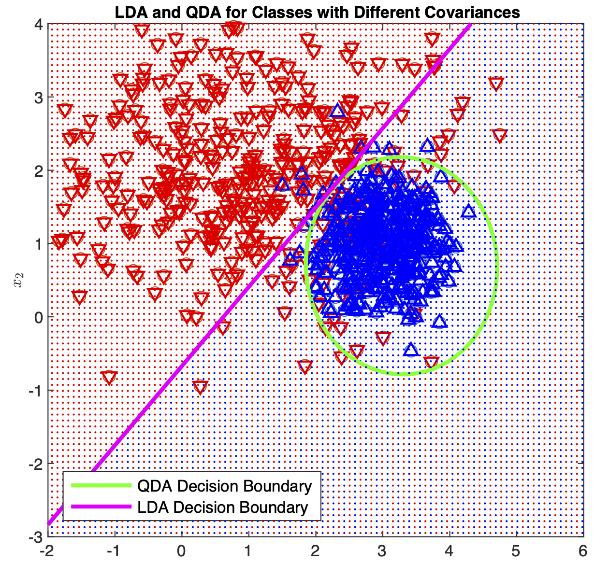

|  |
|


ECE 6501/4502, CS 6501: Probabilistic Machine Learning (Fall 2025)
Welcome! In this course, we’ll study estimation and machine learning from a probabilistic point of view.
Why a probabilistic view? Information and uncertainty, which underlie both fields, can be represented via probability in a robust and versatile way. Unknown quantities can be cast as random variables and their relationships to available information as joint distributions. This provides a unifying framework for setting up estimation and machine learning problems, stating our assumptions clearly, designing methods, and evaluating performance.
What topics will we study? We will start with estimation, which can be defined as the problem of learning about the world from data (e.g., finding the chance of getting a disease given one’s genetic make-up) or drawing conclusions about relationships (e.g., what are the best predictors of academic success?). We will then learn about machine learning problems such as regression and classification, where the goal is to predict an unknown quantity, e.g., the price of a house, based on some relevant information. We will also learn how to deal with situations when part of the data is missing. Finally, we will discuss computational methods, which help tackle difficult problems via approximation.
Course objectives:
- Use joint distributions and graphical models to describe relationships between known and unknown quantities
- Describe, identify, and apply frequentist and Bayesian estimation
- Construct and apply learning models
- Apply computational methods such as expectation-maximization and Monte Carlo sampling
- Perform approximate inference using variational methods
- Quantify fundamental limits on estimation and learning given available data
Pre-requisites:
- Fluency in basic probability (e.g., APMA 3100) is needed for the course. You should be comfortable with 70-80% of Chapter 0. You can also refer to these pages I developed for a different course to review probability, although these don’t cover everything we’ll need:
- Basics
- Random variables, distributions, and independence
- Expectation and variance
- Conditional probability
- And here are some other resources:
- An online textbook for probability theory: https://www.probabilitycourse.com
- Random Processes for Engineers by Bruce Hajek
- Familiarity with linear algebra.
- The programming exercises are based on Python.
What will help you excel:
The most important factor is remaining engaged in the class. In particular, office hours are often underutilized. Ask questions in class when they arise; not doing so can prevent you from following the lecture and understanding the subsequent material as well. Reach out to the instructors and the TA when you need help.
Note to Undergraduate students: You do not need instructor permission to enroll in this course. But fluency in probability is an important prereq and if your foundation in probability is not strong, you will not be able to fully benefit from the course.
Textbooks:
The main resources are lectures and the pdf notes posted online. But you may find the following useful:
- Probabilistic Machine Learning: An introduction by Kevin P. Murphy, 2022.
- Deep Learning by Ian Goodfellow et al, 2015.
- Information Theory, Inference, and Learning Algorithms by David MacKay, 2003.
- Pattern Recognition and Machine Learning by Christopher M. Bishop, 2006.
- Probabilistic Graphical Models: Principles and Techniques by Daphne Koller and Nir Friedman, 2009.
The information below is from a previous offering and will be updated
Tentative Grading Scheme: HW/Labs = 50%; Quizzes/In-class activities = 20%; Midterm Exam = 20%; Project = 10%
Course Notes: The notes can be found here and are continuously updated. For pre-reading, quizzes, exams, etc., download the latest version when announcements are made.
The individual chapter notes below may be slightly more up to date than the link above:
- Review of Probability
- Probability, Inference, and Learning
- Frequentist Parameter Estimation
- Bayesian Parameter Estimation
- Multivariate random variables
- Linear Regression
- Linear Classification
- Expectation-Maximization
- Basics of Graphical Models
- Independence in Graphical Models
- Parameter Estimation in Graphical Models
- Inference in Graphical Models
- Inference in Hidden Markov Models
- Factor Graphs and Sum/Max-product Algorithms
- Markov Chains
- Sampling Methods
- Appendix
Other Material:
- Notes (OneNote)
- Probability Review Test
- Lab 0: Probability and Python (IPython Notebook)
- Assignment 1
- Lab 1: Graphical Models
- Assignment 2
- Lab 2: Frequentist and Bayesian Estimation
- Assignment 3
- Lab 3: Regression and SGD, data: BoxOffice2017.csv
- Miniproject
- Lab 4: Classification
- Lab 5: EM
- Assignment 4
- Lab 6: HMM
- Assignment 5
- Lab 7: MCMC